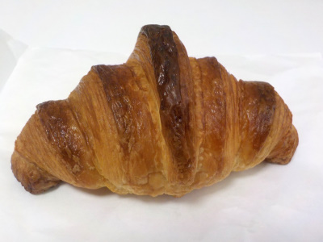

パンと焼き菓子の店のアンパン。
2023/12/14
コンガリとした焼色のアンパンです。
中のアンコはしっとりなめらかで、和菓子くらい美味しいって思いました。
このアンコで桜餅とか柏餅があったらとっても美味しいだろうなと思いました。
島根県出雲市大津町1574-8 くるみ市内
2023/12/14
コンガリとした焼色のアンパンです。
中のアンコはしっとりなめらかで、和菓子くらい美味しいって思いました。
このアンコで桜餅とか柏餅があったらとっても美味しいだろうなと思いました。
2023/12/10

見た目が綺麗だったので買いました。きっと丁寧に作られたんだろうな。
外はパリパリで中はふんわりでした。バターたっぷり系ではないので、美味しいパン味が楽しめました。